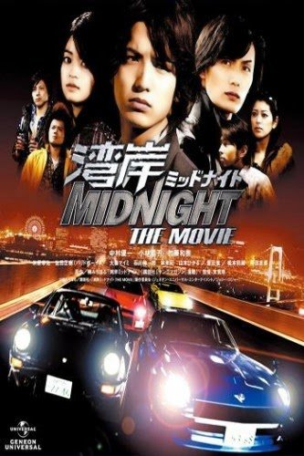
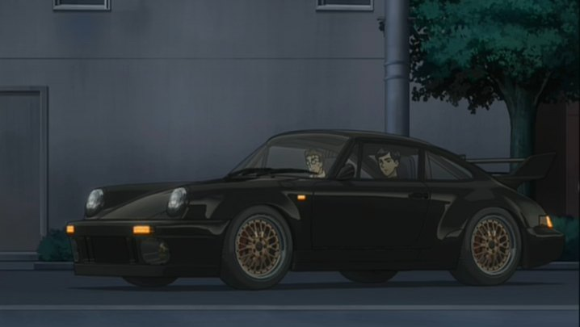
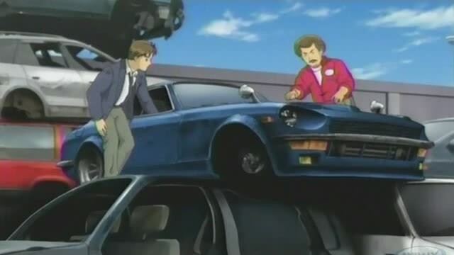
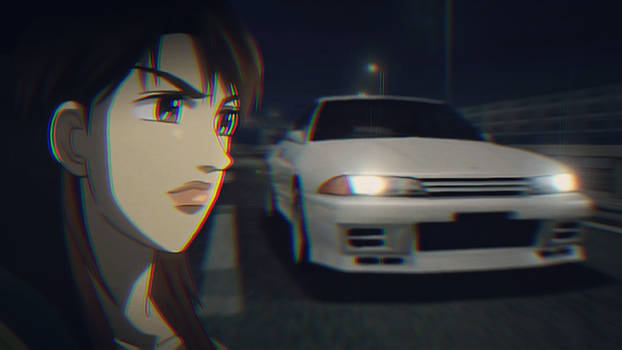

Wangan Midnight
SPECIAL FEATURE
By:Darren Punzalan
9TH SEPTEMBER 2022
Wangan Midnight (Japanese: 湾岸ミッドナイト, Hepburn: Wangan Middonaito)
is a Japanese racing manga series written and illustrated by Michiharu
Kusunoki. It was first serialized in Shogakukan's Big Comic Spirits in
1990, but was later serialized in Kodansha's Weekly Young Magazine from
1992 to 2008. The manga was compiled into 42 volumes published by Kodansha.
A second manga series titled Wangan Midnight: C1 Runner was published
from 2008 to 2012. A third manga series, Ginkai no Speed Star, was published
from 2014 to 2015. A fourth manga series, Shutoko SPL - Ginkai no Speedster
, started in 2016.
The series has been adapted into several live action feature films, video
games, and an anime television series.

The anime was broadcast in Japan from
June 2007 to September 2008 on the anime satellite television network Animax,
animated by A.C.G.T and produced by OB Planning.
In 1999, Wangan Midnight won the Kodansha Manga Award for the General
category.
Story:
The series revolves around street racing on Tokyo's Bayshore Route
(Japanese: 湾岸, Hepburn: Wangan), as well as other roads on the Shuto
Expressway network. The story begins with high school student Akio Asakura
encountering a black Porsche 911 Turbo nicknamed "Blackbird" on the Wangan.
Akio attempts to give chase, but is unable to keep up with the Blackbird,
which is driven by a medical doctor named Tatsuya Shima.

Determined to drive a faster car, Akio visits a junkyard and is drawn to an
old blue Nissan Fairlady Z (S30) with a highly tuned L28 engine. He learns
that the car is supposedly "cursed," being extremely difficult to drive and
having a history of multiple accidents, earning it the name "The Devil Z"
(Japanese: 悪魔のZ, Hepburn: Akuma no Zetto).

However, this does not dissuade
him, and he restores the car back to its former glory. When racing with Blackbird
, Akio tries to win, only to crash his Nissan multiple times. He also gets to
meet Eriko Asakura, the sister of the original driver who shares the same name
as the current Akio, who previously died in a car accident while racing with
Blackbird.
As he develops his career as the infamous owner of the Devil Z, Akio meets many
other racers and tuners along the way, such as fashion model and TV host Reina
Akikawa, who drives a grey (later white) Nissan Skyline GT-R R32,

and Jun Kitami,
the original creator of the infamous Devil Z and Blackbird. The central plot
revolves around the rivalry between the Devil Z and Blackbird for Wangan
superiority as Akio tries to remain his loyalty with the car and control it
from crashing, with other racers trying to compete against both of them who
are also seeking to oust their record.
The new story arc, Wangan Midnight: C1 Runner, features the new adventures of
a new main character, Shinji Ogishima (who debuted in the last chapters of the
original manga), and his friend, Nobu Setoguchi.[citation needed] They are part
of the GT Cars project, which is in dispute and conflict, and must drive Mazda
RX-7's along Shuto Expressway to settle these problems along with meeting Tatsuya
Shima.
Here is the list if you want to watch Wangan Midnight
- Wangan Midnight (湾岸MidNight), 1991
- Wangan Midnight II (湾岸ミッドナイトII), 1993
- Wangan Midnight III (湾岸ミッドナイトIII), 1993
- Wangan Midnight 4 (湾岸ミッドナイト4), 1993
- Wangan Midnight Special Director's Cut Complete Edition (湾岸ミッドナイトスペシャル ディレクターズカット完全版), 1994
- Wangan Midnight Final: GT-R Legend – Act 1 (湾岸ミッドナイト FINAL ~GT-R伝説 ACT1~), 1994
- Wangan Midnight Final: GT-R Legend – Act 2 (湾岸ミッドナイト FINAL ~GT-R伝説 ACT2~), 1994
- Devil GT-R Full Tuning (魔王GT-R チューニングのすべて), 1994
- Showdown! Devil GT-R (対決!魔王GT-R), 1994
- Wangan Midnight S30 vs. Gold GT-R – Part I (新湾岸ミッドナイト S30vsゴールドGT-R Part I), 1998
- Wangan Midnight S30 vs. Gold GT-R – Part II (新湾岸ミッドナイト S30vsゴールドGT-R Part II), 1998
- Wangan Midnight Return (湾岸ミッドナイト リターン), 2001
- Wangan Midnight The Movie (湾岸MidNight Movie), 2009[4]